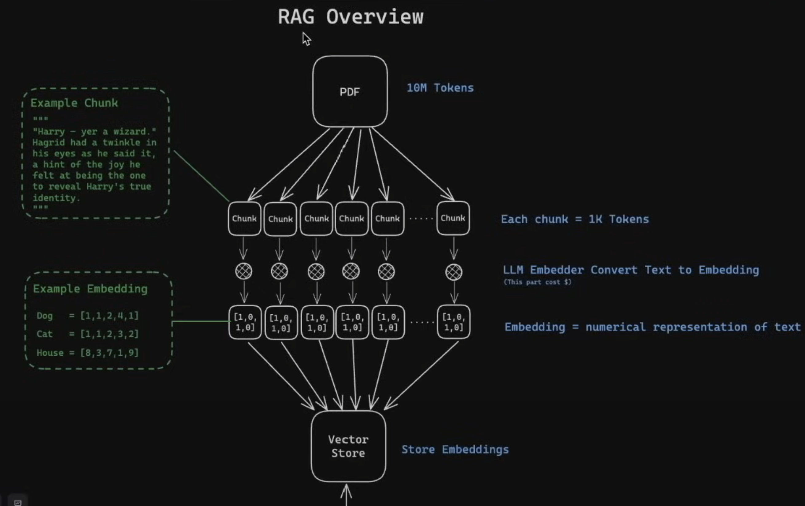
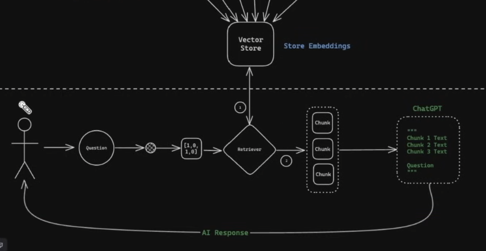

What is an AI Model?An AI model, or Artificial Intelligence model, refers to a mathematical representation of a system or process designed to perform intelligent tasks. It is essentially a machine learning algorithm trained on data to make predictions, decisions, or classifications. Key Characteristics of AI Models
Types of AI Models
Training Process of AI Models
Applications of AI Models
Advantages of AI Models
Disadvantages of AI Models
|
AI-Powered Solutions Tailored to Your BusinessI specialize in delivering custom artificial intelligence solutions designed to create real business value. From predictive analytics to intelligent chatbots, my expertise in machine learning and advanced AI systems can help your organization unlock new insights and streamline decision-making processes. My offerings include custom machine learning software, Retrieval-Augmented Generation (RAG) systems leveraging large language models like Llama, and interactive AI dashboards built with tools like Streamlit. These solutions integrate seamlessly with your existing workflows, enabling efficient visualization, analysis, and communication of data. With a strong background in IT software development and a Master’s degree in Machine Learning from California Lutheran University (2014), I’m ready to consult on your AI projects. Send me text directly (805) 416-0949 (Los Angeles, CA) for a prompt response. Let’s work together to bring your AI vision to life.
Kevin Luzbetak |
|
Consulting and software development services available. Consulting: $120/hour Previous experience includes work with: Consulting Contact: https://Pacific-Design.com/contact |
|
  |